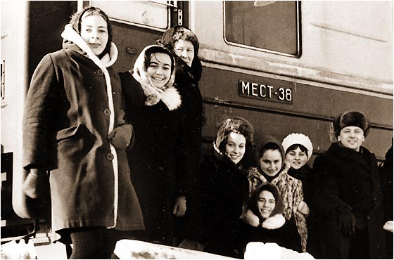

Вероятно раньше деревья были гораздо больше. Сейчас уже и не вспомнить. Может быть раньше небо было синее. Сейчас уже не узнать.
Но детство точно раньше было другое. И песни. Детские песни.
Подаривший нам огромное количество детских песен Большой детский хор Всесоюзного радио и Центрального телевидения был создан Заслуженным артистом Российской Федерации Виктором Сергеевичем Поповым в 1970 году.
Первым, кстати, местом, куда хор отправился на гастроли был Томск.

Одним из первых «звездных» солистов детского хора стал Сергей Парамонов. В 71 году десятилетнего Сергея в хор, по объявлению, привела мама.
Сын слесаря и уборщицы умел, почти без подсказок умел находить нужные интонации в песнях, и одна из них («Просьба») была написана Александрой Пахмутовой специально под Сергея.
Сергея называли советским Робертино Лоретти. В 14 лет у Сергея начал ломаться голос, ему пришлось покинуть коллектив, из-за чего он очень сильно переживал. В 1998 году, в возрасте 36 лет, Сергей умер от от сердечного приступа. Последний раз вместе с хором на сцене Сергей появился в 1995 году, когда хор отмечал свой 25-летний юбилей.
Кроме Сергея Парамонова на сцену выходил еще один знаменитый солист Большого детского хора — Дима Голов.
Еще один солист — Дима Викторов «По секрету всему свету», для одноименного фильма. Говорят после ломки голоса не забросил пение, я стал петь в камерном хоре
Одна из самых знаменитых солисток-девочек детского хора Лена Могучева, пришла в хор в 1976 году, когда ей было всего 6 лет.
Рита Суханкина на снимке — та самая Маргарита Суханкина, которая позже будет петь песни для группы «Мираж»